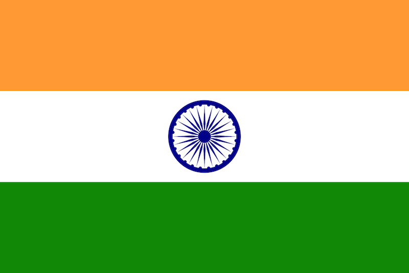

Attempts to create design guidelines
Throughout history, many have sought to establish guidelines for effective flag design, recognizing the importance of creating symbols that are visually impactful, meaningful, and enduring. While flag design has often been shaped by tradition and culture, modern efforts to formalize these principles have brought greater attention to the art and science behind it.
One of the most notable contributions comes from the North American Vexillological Association (NAVA), in the pamphlet "Good Flag, Bad Flag", which outlined five key principles of flag design: simplicity, meaningful symbolism, limited colors, no lettering or seals, and distinctiveness. These guidelines aim to ensure flags are easily recognizable, culturally resonant, and practical for both large displays and smaller reproductions.
Sometimes, these guidelines are seen as rules to basic flag design, and are applied in order to "rate" the quality of certain flags:
Criticism of guidelines
The five principles for making a flag mentioned previously have had their fair share of criticism.
Multiple issues have been raised by opponents of the principles, such as the fact that many great flag designs break them, or that the "quality" of a flag cannot be judged by following some arbitrary rules, but rather by how well it manages to represent a group of people.
An extensive (and harsh!) criticism of the "Good Flag, Bad Flag" pamphlet was written by a person nicknamed Anne Onimous. You can click here to read it.
Indeed, some of the flags pictured below break many of the guidelines, yet they can still be considered well-designed. This suggests that the guidelines should be taken with a grain of salt, and used specifically for easily creating a good looking flag without much experience.
Flags and their symbolism
| Flag | Description |
|---|---|
 |
The flag of the United States, often called the "Stars and Stripes," is probably the most iconic in this list. It consists of 13 red and white horizontal stripes and 50 white stars on a blue field. The stripes represent the original 13 colonies, while the 50 stars symbolize the states in the union. Fun fact: unlike most flags, which either have a 2:3 or 1:2 aspect ratio, the US flag has an unusual 1:1.9 aspect ratio! |
| Mozambique's flag is one of the most unique in the world, as it features an AK-47 rifle with a bayonet attached, symbolizing defense and vigilance. The flag also includes a hoe, representing agriculture, and an open book, denoting education. | |
| The bird-of-paradise, native to Papua New Guinea, symbolizes the country's cultural identity and freedom, while the Southern Cross connects the nation to its geographical position in the Southern Hemisphere. | |
| The dragon on Bhutan's flag stands out quite a lot, being known as the "Druk" or Thunder Dragon. It is a national symbol of Bhutan, representing the strength and purity of the nation. The jewels in its claws signify the country's wealth and prosperity. | |
| Slovakia's flag manages to keep it simple while still featuring a coat of arms. The double cross represents Slovakia's Christian heritage, and the three hills represent the Tatra, Fatra, and Matra mountain ranges. Together, the flag reflects Slovakia's cultural identity and geographic pride. | |
 |
The flag of Maryland is one of the most striking and unique among U.S. state flags, incorporating the heraldic banners of the Calvert and Crossland families. While it may seem convoluted, it's odd nature gives it uniqueness, making it a particularly interesting flag. |
 |
The European Union flag is a simple yet powerful symbol of unity and cooperation. It features a circle of 12 golden stars on a blue field. The blue symbolizes the values of peace and harmony, while the 12 stars represent unity, perfection, and completeness, not tied to the number of member states. |
 |
The French flag, known as the Tricolore, consists of three vertical bands of blue, white, and red. Blue and red are traditional colors of Paris, while white represents the monarchy and the people's aspirations for liberty and equality during the French Revolution. Together, the flag embodies the ideals of liberty, equality, and fraternity, the core principles of the French Republic. |
|  | India's flag, known as the Tiranga (Tricolor), features three horizontal stripes of saffron, white, and green, with a navy blue Ashoka Chakra (wheel) in the center. The 24-spoke wheel, derived from the Ashoka Pillar, signifies the eternal cycle of life, and was originally proposed by Gandhi in 1921, whose goal was to make Indians self-reliant; to spin cloth for themselves. |
| Hong Kong's flag features a red field with a white five-petal Bauhinia blakeana flower in the center. Each petal contains a small red star. Red symbolizes the connection to China, while the white flower represents the region's identity and its principle of "one country, two systems." The red stars in the petals signify Hong Kong's place within the People's Republic of China while highlighting its unique cultural and economic character. |